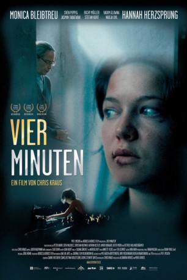
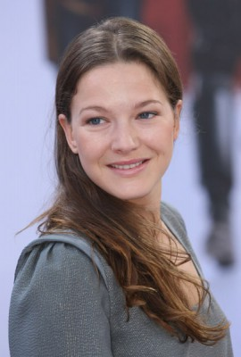
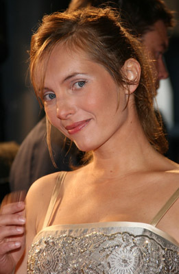
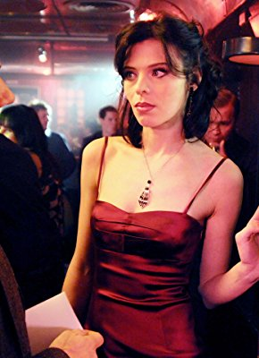
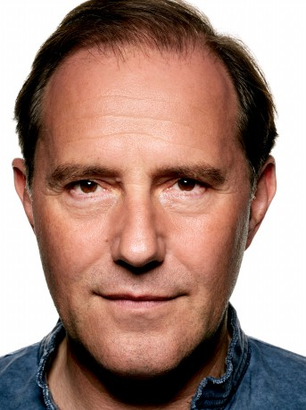
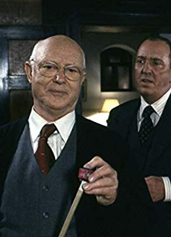
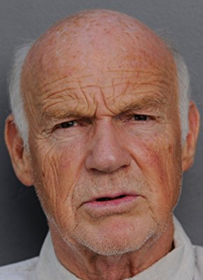

#1352 Vier Minuten
 
 IMDB-Wertung: 7.4 / 10
IMDB-Wertung: 7.4 / 10  Metascore: 0
Metascore: 0 
In einem Frauengefängnis kreuzen sich die Schicksale der über 80-jährigen Traude Krüger und der 21-jährigen Jenny. Erstere ist eine altgediente Klavierlehrerin, die Jüngere ein neuer aufsässiger Häftling. Obwohl Jenny die alte Dame vor den Kopf stößt, wo sie nur kann, fördert Traude ihr Talent nach Kräften. Für die gemeinsame Chance eines Klavierwettbewerbs müssen beide sich öffnen und dunkle Geheimnisse preisgeben.
Jahr: 2006
Dauer: 112 Minuten
FSK: 12
Land: Deutschland Studio: Piffl MedienTonspuren:
Untertitel:
Auflösung: 720p (1280x720) Größe: 1740 MB
Genre: Drama, Musik
Regisseur: Chris Kraus
Drehbuch: Chris Kraus
Soundtrack: Annette Focks
Darsteller:
-  Hannah Herzsprung als Jenny von Loeben
-  Nadja Uhl als Nadine Hoffmann
- Christian Koerner als SS-Sturmbannführer
- Dieter Moor als TV-Moderator
- Monica Bleibtreu als Gertrud 'Traude' Krüger
- Sven Pippig als Mütze
-  Richy Müller als Kowalski
- Jasmin Tabatabai als Ayse
-  Stefan Kurt als Direktor Meyerbeer
-  Vadim Glowna als Gerhard von Loeben
- Peter Davor als Journalist Wahrig
 Edita Malovcic als Traude - jung
Edita Malovcic als Traude - jung- Kathrin Kestler als Hannah
- Amber Bongard als Clara Mütze
-  Dietrich Hollinderbäumer als Pater Vincens
- Maria Hartmann als TV-Kandidatin
- Isolde Fischer als Platzanweiserin
- Irene Rindje als Organisatorin
- Gabriele Schäfer als Aufseherin Quetsche
 Torsten Ranft als Entrepreneur
Torsten Ranft als Entrepreneur- Lara Beckmann als Konkurrentin
- Dagmar Leesch als Gefangene Dörte
- Toni Scholz als Gefangene Fränkie
- Marion Hübinger als Gefangene Mary
- André Rauscher als SÜ Einser
- Roberto Galvez als SÜ Einser
- David Ritterhaus als Millionärssohn
- Juliana Albrecht als Mutter Millionärssohn
- Daniela Grosch als NS-Schreibkraft
- Tom Jester als Friseur
- Gerd Weigmann als Wärter
- Thomas Ulbricht als Henker #1
- Michael Sunjo als Henker #2
- Aurel von Arx als Soldat
Datei: X:\2006(N-Z)\Vier Minuten (2006, FSK12, 1280x720).mp4 seit 26.06.2015
Festplatte: HD 2005(G-Z)-2006(A-Z)
 Es gibt insgesamt 62 Filme in der Gruppe '2006(N-Z)'
Es gibt insgesamt 62 Filme in der Gruppe '2006(N-Z)'